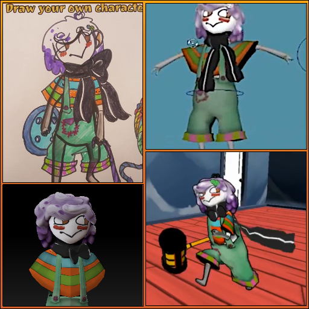

Highlights and WIP
Some different projects that I've worked on or currently is working on.
HTML and CSS
I'm learning HTML and CSS by creating this portfolio website through
Github Pages. Eventually aiming to incorporate some javascript aswell. Check it out in the link!
Armored character
Modelled, textured and created lowpoly version with normalmap. Working on trying different kinds of rigging and animation.
Alien Queen
3 days project where I modelled an alien queen from the alien franchise. I love the design of the aliens and want to possibly make an alien drone or praetorian in the future!
Workflow - Concept to ingame character

When working for Loophole Interactive we went to
Poznan Game Arena to showcase our game. We had a contest where people could draw their own characters.
The image displayed is from one of the winners, which I modelled, animated and put into the game. The link shows my workflow.
Facebook Contests
Short projects which I made for Facebook contests.